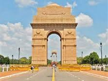

|
|
 |
India
India is one of the oldest civilizations in the world with a kaleidoscopic variety and rich cultural heritage. It has achieved all-round socio-economic progress during the last 64 years of its Independence. India has become self-sufficient in agricultural production and is now one of the top industrialized countries in the world and one of the few nations to have gone into outer space to conquer nature for the benefit of the people. It covers an area of 32,87,263 sq. km, extending from the snow-covered Himalayan heights to the tropical rain forests of the south. As the 7th largest country in the world, India stands apart from the rest of Asia, marked off as it is by mountains and the sea, which give the country a distinct geographical entity. Bounded by the Great Himalayas in the north, it stretches southwards and at the Tropic of Cancer, tapers off into the Indian Ocean between the Bay of Bengal on the east and the Arabian Sea on the west.
Lying entirely in the northern hemisphere, the mainland extends between latitudes 8° 4' and 37° 6' north, longitudes 68° 7' and 97° 25' east and measures about 3,214 km from north to south between the extreme latitudes and about 2,933 km from east to west between the extreme longitudes. It has a land frontier of about 15,200 km. The total length of the coastline of the mainland, Lakshadweep Islands and Andaman & Nicobar Islands is 7,516.6 km.
Incredible !ndia
India is a vast South Asian country with diverse terrain – from Himalayan peaks to Indian Ocean coastline – and history reaching back 5 millennia. In the north, Mughal Empire landmarks include Delhi’s Red Fort complex, massive Jama Masjid mosque and Agra’s iconic Taj Mahal mausoleum. Pilgrims bathe in the Ganges in Varanasi, and Rishikesh is a yoga center and base for Himalayan trekking.Indian folk and tribal dances are an expression of joy.
Places To Visit In India


{kind=link}
{kind=link}
{kind=link}
{kind=link}
{kind=link}
{kind=link}
{kind=link}
Visit India
Visit High Commission Of India Site for all visa requirements.
Indian cuisine
Indian cuisine reflects a 5,000-year history of various groups and cultures interacting with the subcontinent, leading to diversity of flavours and regional cuisines found in modern-day India.
North
Kashmiri cuisine has evolved over hundreds of years, and strongly represents several influences such as Central Asian, Persia, and the North Indian plains.
The most notable ingredient in Kashmir cuisine is mutton (lamb), of which there are over 30 dishes.
Punjabi cuisine on the other hand, can be non-vegetarian or completely vegetarian. Some favourites include stuffed paranthas and dairy products (especially paneer- Indian cottage cheese), Mah Di Dal (lentil) and Sasron Da Saag (mustard leaves).
Tandoori food is a Punjabi speciality. Uttar Pradesh has also been greatly influenced by Mughal (Mughlai cuisine) cooking techniques which is very popular worldwide. The Samosa and Pakora, among the most popular snacks in all of India, are also originally from Uttar Pradesh. Awadhi is a type of West-Central Uttar Pradeshi cuisine found in the state's Awadh Region.
East
With an emphasis on fish and lentils served with rice as a staple diet, Bengali cuisine is known for its subtle flavours, its confectionaries and desserts, and use of panchphoran (or five spices - fenugreek, Nigella seed, cumin seed, radhuni and fennel seed in equal parts).
Bengalis prepare fish in innumerable ways – steamed or braised, or stewed with greens or other vegetables and with sauces that are mustard-based or thickened with poppyseeds.
Oriya cuisine is similar to that from Bengal.Pakhala, a dish made of rice, water, and yoghurt, that is fermented overnight, is very popular in summer, particularly in the rural areas.Dairy products, such as yoghurt, buttermilk, butter, ghee (clarified butter), and lassi, are consumed in Bihar throughout the year. The traditionalpoha (flattened rice) with yoghurt and sugar is popular. Bihar is famous for Sattuparanthas, which are paranthas stuffed with fried chickpea flour, Chokha(spicy mashed potatoes).
South
Andhra Pradesh is known for its heavy use of spices and chillies. Telugu cuisine has evolved separately from Hyderabadi cuisine, the most famous of which is theHyderabadi biryani, a mixture of rice, yoghurt, onions, meat and spices.
Karnataka Masala Dosa, Rave Idli, and Maddur Vade are popular whilethe Coorg district is famous for spicy pork curries and coastal Karnataka has seafood specialities.
Kerala cuisine has a multitude of dishes prepared using fish, poultry and meat. Kerala also has a variety of breakfast dishes like Appam, Idiyappam, Puttu, and Pathiri.The cuisine of the union territory of Puducherry, a French settlement for centuries, has an innovative French and Indo style. Tamil food is characterised by the use of rice, legumes and lentils, its distinct aroma and flavour achieved by the blending of spices. Sambhar (lentils cooked with vegetables) and VathalKuzhambu are popular curries, eaten with plain or mixed rice while Idli, Dosa, Uthappam and Pongal are popular breakfasts.
West
Goa Cuisine Seafood, coconut milk, rice and paste are main ingredients of Goan delicacies and use of Kokum is a distinct feature. Goan cuisine is mostly seafood based and incorporates several Portuguese influences. Well known dishes include Pork Vindaloo and the Xacuti style of cooking.
Maharashtrian cuisine covers a range from mild to very spicy dishes. Popular dishes include puranpoli, ukdichemodak and batatawada. Coastal Maharashtra, loosely called the Konkan, boasts of its own Konkani cuisine, while the interior – the Vidarbha area -- has its own distinctive cuisine known as the Varadi cuisine.
Gujarati cuisine is primarily vegetarian and dhokla is indisputably the most popular snack. The typical Gujarati Thali consists of roti (a flat bread made from wheat flour), daal or kadhi, rice, and sabzi/shaak (a dish made up of different combinations of vegetables and spices, which may be stir fried, spicy or sweet).
Central

Madhya Pradesh cuisine varies from region to region, with the north and west of the state being mainly based around wheat and meat, and the wetter south and east being dominated by rice and fish.
Gwalior and Indore abound in milk and milk-based preparations. Bhopal is known for meat and fish dishes such as rogan josh, korma, keema, biryani pilaf and kababs such as shami and seekh. A popular dish is the bafla (wheat cakes) dunked in rich ghee which are eaten with daal (a pungent lentil broth).
Another popular dish in the Malwa region is poha (flattened rice), served mostly for breakfast.Diet in Chhattisgarh is rice based. Fish and pork constitute a large part of Chhattisgarhi cuisine.